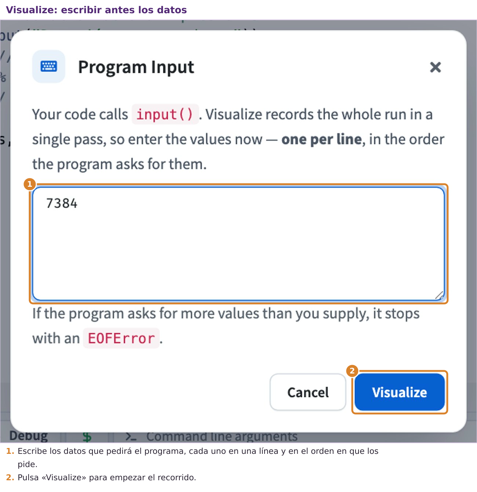
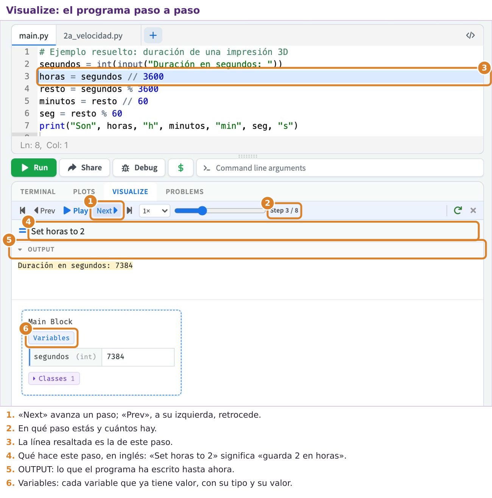

Qué vas a aprender en esta página
- por qué hay que convertir lo que escribe el usuario antes de calcular, y cómo se hace;
- a presentar los resultados de forma clara, con los decimales justos;
- a usar la división entera y el resto para repartir cantidades;
- a trazar un programa: seguirlo paso a paso, a mano y con la herramienta Visualize. Es lo más importante de la unidad.
input() siempre devuelve texto
Ya lo adelantamos en la página 2: lo que devuelve input es siempre un texto (str), aunque el usuario escriba un número. Este programa lo demuestra:
a = input("Primer número: ")
b = input("Segundo número: ")
print("Sin convertir:", a + b)
print("Convertidos:", int(a) + int(b))Si el usuario escribe 50 y 5
Primer número: 50
Segundo número: 5
Sin convertir: 505
Convertidos: 55Con textos, el signo + no suma: pega un texto detrás de otro, y «50» pegado a «5» da «505». Para que sume hay que convertir los textos en números. Para eso hay tres funciones de conversión:
| Función | Convierte en | Ejemplo |
|---|---|---|
int(x) | número entero | int("12") da 12 |
float(x) | número con decimales | float("3.5") da 3.5 |
str(x) | texto | str(7) da "7" |
Si el texto no se puede convertir en número, el programa se detiene con un error. Esto pasa si el usuario escribe «cincuenta» en lugar de 50:
v = float(input("Velocidad en km/h: "))
print(v / 3.6)Si el usuario escribe «cincuenta» (última línea del mensaje de error)
Velocidad en km/h: cincuenta
ValueError: could not convert string to float: 'cincuenta'ValueError significa «error de valor»: Python no sabe convertir «cincuenta» en un número. Al final de esta página aprenderás a evitar que el programa se detenga.
Presentar bien los resultados
Cuando un cálculo da muchos decimales, el resultado es difícil de leer. Mira este programa y lo que escribe:
v = 100 / 3.6
print(v)
print(round(v, 2))
print("Velocidad:", round(v, 1), "m/s")
print("A", "B", "C", sep="-")En la consola
27.77777777777778
27.78
Velocidad: 27.8 m/s
A-B-Cround(x, n)redondea el númeroxandecimales. Úsalo solo para mostrar el resultado; si redondeas a mitad de un cálculo, el error se va arrastrando.printpuede recibir varios datos separados por comas, y los escribe uno detrás de otro separados por un espacio. Consep="..."puedes elegir otro separador.
Ejemplo paso a paso: cuánto dura una impresión 3D
Problema: el programa que prepara las piezas para la impresora 3D dice cuánto durará la impresión, pero en segundos. Queremos pasarlo a horas, minutos y segundos.
1. Analizar. Entrada: la duración en segundos (un número entero). Salida: las horas, los minutos y los segundos. Proceso: una hora son 3600 s. Si dividimos los segundos entre 3600 con la división entera //, obtenemos las horas completas. Los segundos que sobran son el resto de esa división %. Con ese resto hacemos lo mismo, pero dividiendo entre 60, para sacar los minutos y los segundos.
2. Planificar.
pedir los segundos
horas = segundos entre 3600 (división entera)
resto = lo que sobra de esa división
minutos = resto entre 60 (división entera)
seg = lo que sobra de esa división
escribir horas, minutos y seg3. Escribir el código.
# Ejemplo resuelto: duración de una impresión 3D
segundos = int(input("Duración en segundos: "))
horas = segundos // 3600
resto = segundos % 3600
minutos = resto // 60
seg = resto % 60
print("Son", horas, "h", minutos, "min", seg, "s")4. Comprobar. 7384 s son 2 h (7200 s) y sobran 184 s, que son 3 min (180 s) y 4 s:
Duración en segundos: 7384
Son 2 h 3 min 4 sCon 59 segundos, que no llegan a un minuto
Duración en segundos: 59
Son 0 h 0 min 59 sTrazar un programa: seguirlo paso a paso
Trazar un programa es hacer a mano lo que haría el ordenador: leer las líneas una a una, en orden, y apuntar cuánto vale cada variable después de cada línea. Se hace con una tabla, la tabla de traza.
¿Para qué sirve? Para entender de verdad qué hace un programa, para encontrar errores y para predecir el resultado sin ejecutarlo. Es la destreza más importante de esta unidad y una buena parte del examen en papel consiste en esto.
Esta es la traza del programa de la impresión 3D cuando el usuario escribe 7384:
| Línea que se ejecuta | Variable que cambia | Nuevo valor |
|---|---|---|
segundos = int(input(...)) | segundos | 7384 |
horas = segundos // 3600 | horas | 2 |
resto = segundos % 3600 | resto | 184 |
minutos = resto // 60 | minutos | 3 |
seg = resto % 60 | seg | 4 |
print(...) | (ninguna: escribe en pantalla) | Son 2 h 3 min 4 s |
Comprueba tus trazas con Visualize
online-python tiene una herramienta, Visualize, que ejecuta el programa paso a paso y te enseña en cada paso qué línea se ejecuta y cuánto valen las variables. Sirve para comprobar si tu traza en papel está bien.
- Copia el programa en una pestaña y pulsa el botón Visualize (arriba a la derecha).
- Si el programa pide datos con
input, se abre una ventana llamada Program Input. Escribe ahí los datos que usarías, uno en cada línea y en el orden en que el programa los pide, y pulsa Visualize.

- Avanza con Next y retrocede con Prev. En cada paso, compara lo que ves con tu tabla de traza.

Primero el papel, después Visualize
Visualize no piensa por ti: sirve para comprobar. Si lo usas antes de trazar a mano, no aprenderás a trazar, y en el examen en papel no tendrás Visualize.
Ahora tú: traza un programa
No se entrega ni cuenta para la nota: sirve para comprobar si lo has entendido.
Traza en papel este programa, con una columna para cada variable, y escribe lo que imprime. Después cópialo en main.py y compruébalo con Visualize.
a = 17
b = 5
c = a // b
d = a % b
a = c * b + d
print(a, c, d)Ver la solución
| Línea | a | b | c | d |
|---|---|---|---|---|
a = 17 | 17 | |||
b = 5 | 17 | 5 | ||
c = a // b | 17 | 5 | 3 | |
d = a % b | 17 | 5 | 3 | 2 |
a = c * b + d | 17 | 5 | 3 | 2 |
Imprime 17 3 2. La última línea vuelve a dar 17: el cociente por el divisor más el resto es siempre igual al dividendo (3 · 5 + 2 = 17).
Práctica 3a · Piezas en cajas
Dónde se hace: en una pestaña nueva de online-python llamada 3a_cajas.py. Pulsa + junto a las pestañas, escribe 3a_cajas y pulsa Intro (el editor añade .py solo).
Una máquina fabrica piezas que se guardan en cajas. En cada caja cabe siempre el mismo número de piezas. Solo se envían las cajas llenas; las piezas que no completan una caja se quedan sueltas.
Qué tienes que hacer: un programa que pida cuántas piezas se han fabricado y cuántas caben en una caja, y diga cuántas cajas se llenan y cuántas piezas quedan sueltas. Pista: es el mismo razonamiento que el de la impresión 3D.
- Analiza y planifica en papel.
- Antes de escribir el programa, traza a mano el caso de 250 piezas y 12 por caja.
- Escribe el programa y compruébalo con la tabla:
| Piezas | Por caja | Cajas llenas | Piezas sueltas |
|---|---|---|---|
| 250 | 12 | 20 | 10 |
| 96 | 12 | 8 | 0 |
| 5 | 12 | 0 | 5 |
Así se ve con 250 piezas y 12 por caja
Piezas fabricadas: 250
Piezas por caja: 12
Cajas completas: 20
Piezas sueltas: 10¿Te has atascado? Abre aquí el programa con huecos
Este es el programa de la práctica con algunas partes borradas. Cada ____ es una palabra, un número o un signo que ya has visto en esta página o en las anteriores. Cópialo en tu pestaña, sustituye cada hueco por lo que falta y ejecútalo para comprobar que funciona. Intenta primero hacerlo sin abrir esto: se aprende mucho más.
# 3a_cajas: piezas que caben en cajas
piezas = ____(input("Piezas fabricadas: "))
por_caja = int(input("Piezas por caja: "))
cajas = piezas ____ por_caja
sueltas = piezas ____ por_caja
print("Cajas completas:", cajas)
print("Piezas sueltas:", sueltas)Práctica 3b · Un convertidor que no se rompe (un paso más)
Dónde se hace: en una pestaña nueva de online-python llamada 3b_robusto.py. Pulsa + junto a las pestañas, escribe 3b_robusto y pulsa Intro (el editor añade .py solo).
Esta práctica la tiene que intentar todo el mundo. Es un paso más difícil que las anteriores: aplicas lo de la página a un problema nuevo y con menos ayuda. Si no te sale entera, no la dejes en blanco: entrega lo que hayas conseguido y escribe al principio del programa un comentario que explique hasta dónde has llegado y qué te falta. Forma parte de tu colección de programas.
Ya has visto que si el usuario escribe un texto donde el programa espera un número, el programa se detiene con un ValueError. Python permite «capturar» ese error para que el programa reaccione en lugar de detenerse. Se hace así:
try:
edad = int(input("Edad: "))
print("El año que viene tendrás", edad + 1)
except ValueError:
print("Eso no es un número entero")try significa «inténtalo»: Python ejecuta las instrucciones de dentro. Si alguna produce un ValueError, en lugar de detenerse salta a las instrucciones de except. Las líneas de dentro van desplazadas a la derecha, como en el modelo.
Qué tienes que hacer: reescribe tu convertidor de km/h a m/s de la práctica 2a para que, si el usuario no escribe un número, avise del error en lugar de detenerse. Debe comportarse así:
Con 90
Velocidad en km/h: 90
90.0 km/h son 25.0 m/sCon «cincuenta»
Velocidad en km/h: cincuenta
Eso no es un número: cincuentaAntes de cerrar el navegador: guarda y sube tu trabajo
Tus programas solo están guardados en el navegador de este ordenador. Para que no se pierdan y para que cuenten en tu colección, al terminar la página tienes que descargarlos y subirlos a Moodle. Comprueba primero que tienes estas pestañas, cada una con su programa funcionando:
3a_cajas.py3b_robusto.py
1. Descarga tus pestañas en un ZIP. Un ZIP es un único archivo que lleva dentro varios archivos.
- Pulsa el icono del disquete, arriba a la izquierda.
- En la ventana que se abre, elige All files as a ZIP («todos los archivos en un ZIP»).
- En ZIP file name escribe
pagina3. No pongas tu nombre: Moodle ya sabe quién lo sube. - Pulsa Download. El archivo
pagina3.zipse guarda en la carpeta de descargas del ordenador.
2. Súbelo a Moodle. Toda la unidad se entrega en una sola tarea, Colección de programas (Python), a la que irás añadiendo un ZIP por página.
- Abre la tarea Colección de programas (Python) en el curso de Moodle.
- La primera vez pulsa Agregar entrega; las siguientes, Editar entrega.
- Arrastra el ZIP a la zona de archivos, junto a los de las páginas anteriores. Después pulsa Guardar cambios.
- No pulses Enviar tarea todavía: eso se hace una sola vez, al terminar la página 8.
Lo que tienes que saber de esta página
inputdevuelve siempre texto: para calcular hay que convertirlo conint(...)ofloat(...).round(x, n)redondea andecimales; úsalo solo para mostrar resultados.//da cuántas veces cabe un número en otro y%da lo que sobra.- Trazar es seguir el programa a mano, línea a línea, apuntando en una tabla el valor de cada variable.
- Visualize ejecuta el programa paso a paso: úsalo para comprobar tus trazas, no para hacerlas.
Test
Piensa qué hace Python en cada caso antes de elegir. Si dudas, compruébalo después en online-python.